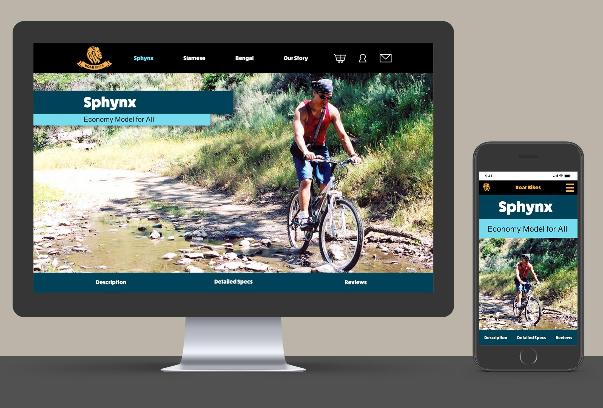
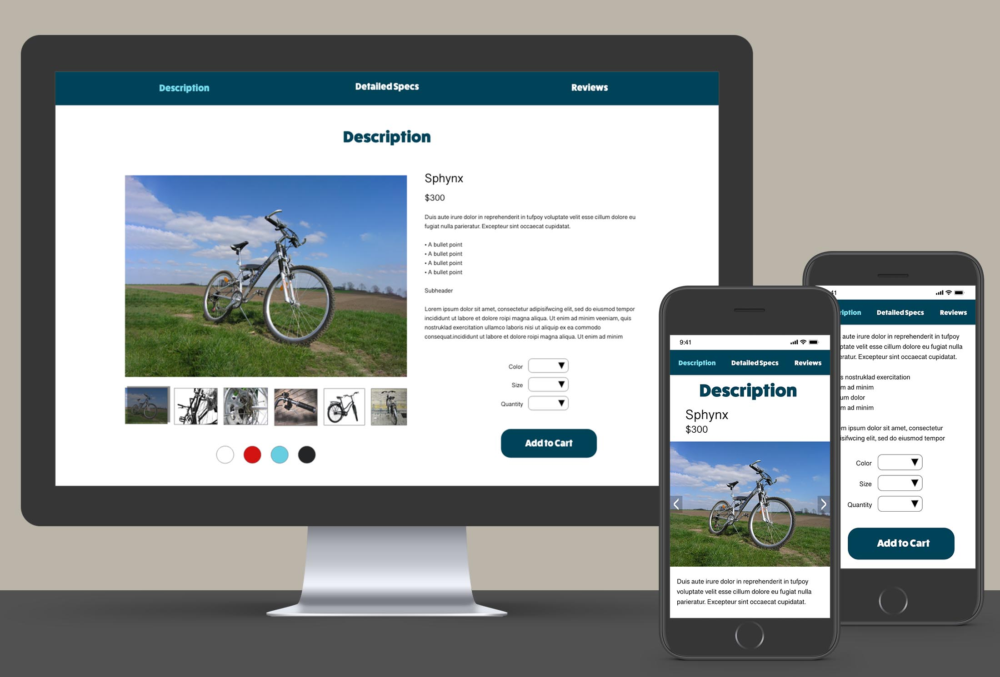
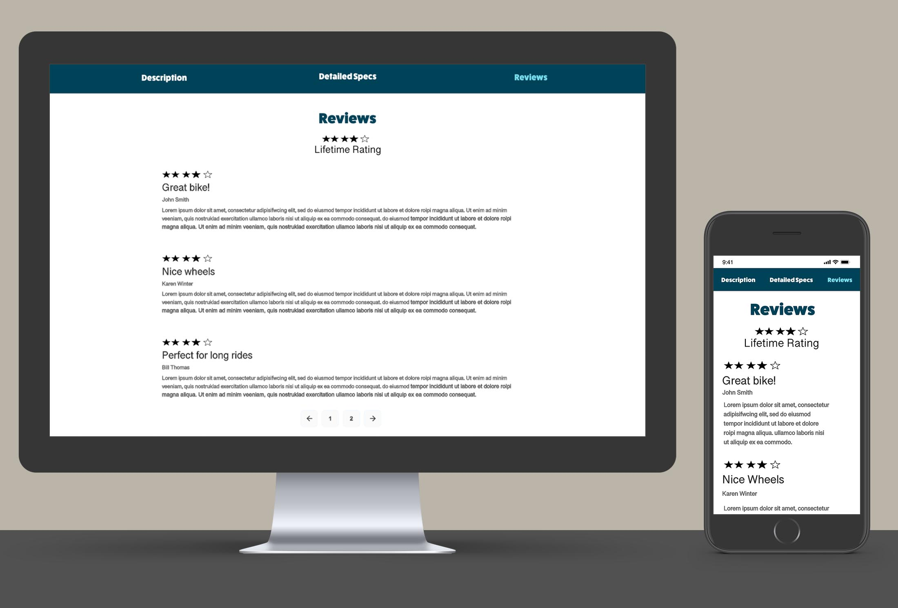

I've worked on many digital products, which has increased my interest in user experience, web design, and coding. I have taken courses to develop skills in these areas because I believe knowing them will enhance any digital development work I do. Below are some examples of projects I've worked on that reflect these skills.
As part of a user experience design class, I completed a project where I designed a website for a fictional business called Roar Bikes.
The first step in the project was to create wireframes using Adobe XD that sketched out each page type and where the required elements on it would fall. After all page types were complete, I organized the wireframes into a site map to capture the overall structure and hierarchy of the site. While this was for a fictional business, the purpose of wireframes like this would be to have a visual that could be used for getting early feedback from clients or users.
After developing the wireframes, I took the project to the next level by creating a high fidelity mockup showing the visual design and UI of the home page. I selected a color scheme, font style, and photos, and then created the mockups using Adobe XD. I built two versions of the page, one for desktop and one for mobile devices. If this was a real business, these designs would be used to get final approval from a client before turning the plans over to a developer.
On the page I used a hero image showing an action shot of a rider on a bike, followed by introductory text about the company. This was meant to draw the customer into the site and let them see the company’s message as soon as they load the page. As a user scrolls, they will immediately see options to select which model of the bike they’re interested in.
The images below show how the home page would look as a user scrolls through it on different types of devices.
After completing the home page, I also designed mockups for both desktop and mobile versions of additional site pages. The requirements for the project were to create three separate product pages for different models of bikes being sold.
I wanted to ensure a consistent user experience across all three pages, while still giving each one a unique look and feel. To do this I designed a structure that included all required elements and then applied different color schemes to each page.
On the product pages I used hero images again, showing each bike type being used in its intended setting. This was meant to provide a visual display of how each bike is meant to be used, to help customers decide if it’s the right one for them. Below that opening image a user can jump to additional sections with descriptions, options to buy, detailed specs, and reviews. I included this extra level of navigation because the pages needed to contain a lot of content that users may not want to scroll through manually.
The images below show how different sections of a product page would look as a user scrolls through it on different types of devices.
  I did all design and development work for this personal portfolio website myself. I wanted to ensure that the site was fully responsive, that it was easy to use, and that it could clearly display samples of my work.
I developed low fidelity wireframes of the home page to capture how I wanted the page elements to rearrange at different breakpoints, to ensure that the visuals would look good on multiple devices. I documented any place where I needed objects to reflow or resize so that I could build the site accordingly.
I also wrote and implemented all code for this website myself, using HTML, CSS, and JavaScript, working in a text editor designed for writing code.
See additional samples: